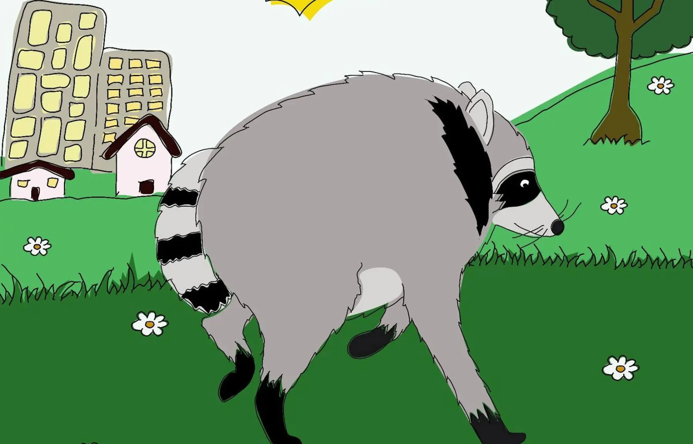
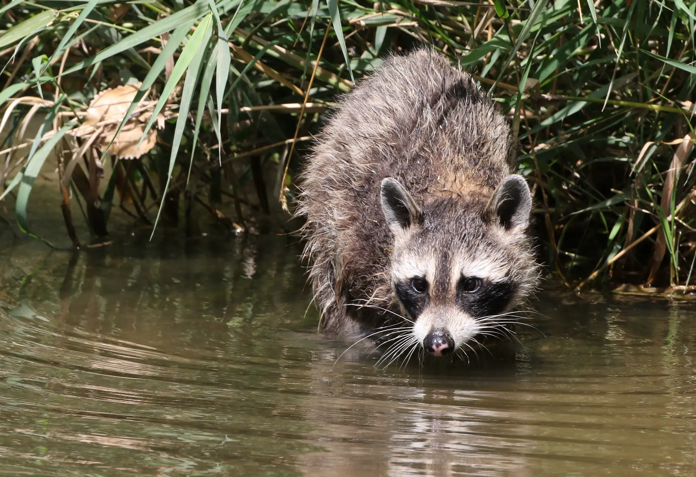
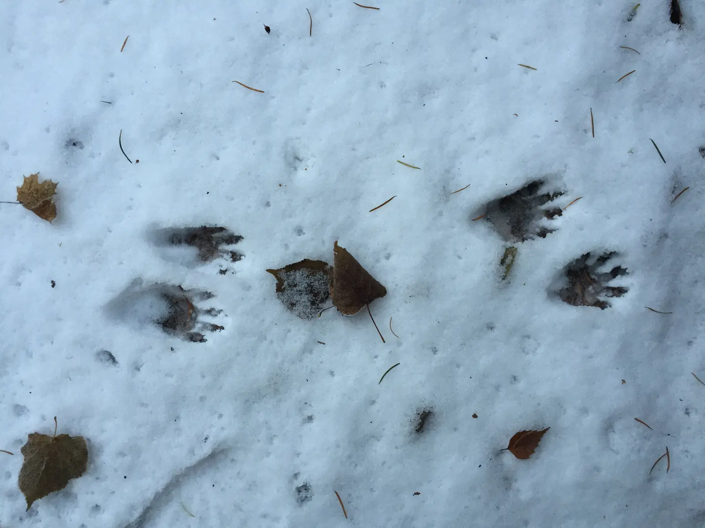

Jimothy Beloved cryptid.
A real raccoon, an undiagnosed body difference and a five-second encounter that became Seattle folklore. The species was never the mystery. That did not stop the legend.
Five seconds of uncertainty. A name that stayed.
Kiana Hall's recording did not reveal an unknown species. It captured the exact moment a familiar animal became briefly unfamiliar.
The silhouette came first.
Hall encountered the animal during an evening walk with her partner on July 13. The short, rounded torso made identification difficult at first. She recorded the raccoon crossing grass and climbing away, then posted the clip the next day.[01]
The name was immediate and intuitive: the animal looked like a Jimothy. The clip supplied the image; the name gave people a character they could remember, repeat and build upon.[02]
View Hall's original post The archive links to the copyrighted original rather than republishing the recording.Probable explanation. No diagnosis.
The responsible answer is narrower than the internet's favorite label.
Resembling short spine syndrome.
Washington State University veterinarian Marcie Logsdon reviewed the footage and said Jimothy's shortened neck and torso likely reflect a congenital spinal deformity. The appearance resembles what is popularly called short spine syndrome.[03]
That comparison is plausible, but it is not a species-specific clinical finding. Video cannot reveal pain, internal complications or long-term prognosis. What can be said is that Jimothy appears mobile and well adapted in the recordings available.
Archive language: suspected congenital spinal deformity. Never “officially diagnosed.”
Before fame. Then everywhere.
A place on this timeline means an event shaped the public story. It does not prove that every older recording shows the same individual.
Claimed juvenile footage
Later-released video appears to show a compact juvenile with its mother and normally proportioned siblings. It is widely called “Baby Jimothy,” but identity remains unverified.[02]
The Ballard encounter
Kiana Hall records the raccoon during an evening walk.[01]
Jimothy gets a name
Hall posts the clip. Neighborhood recordings begin joining the same developing biography.[01]
“Beloved Cryptid”
D&D Beyond publishes an official Jimothy creature entry, fixing the cryptid label in the public record.[07]
A federal portrait
USGS illustrator Sally House releases the human-drawn portrait used in this case file.[08]
Jimothy Summer
Seattle councilmembers hold a public proclamation event and community art celebration in Ballard.[09]
Latest reliable report found
Footage attributed to Jimothy shows a compact raccoon drinking in a Seattle backyard. ABC reports it the following day; the precise location is withheld here.[06]
How a cryptid is made.
Jimothy compresses the usual folklore cycle from decades into days.
Unfamiliar shape
A known animal produces an uncertain first impression.
A personal name
“Jimothy” turns an observation into a character.
Shared sightings
Neighbors attach new and older recordings to the story.
Fixed iconography
Artists repeat the round body, raccoon mask and long legs.
Public ritual
Art events, slogans and a civic proclamation create community.
Institutional adoption
USGS, D&D Beyond and the Mariners make the legend official.
Could there be more than one Jimothy?
Reports of compact raccoons extending back to 2017 do not fit comfortably inside the expected life of one wild individual.[05]
Retrospective memory
Some older encounters may have been misdated, misremembered or attached to Jimothy only after the name existed.
Several animals
More than one short-bodied raccoon may have lived in the area, producing a composite public biography.
A mixed record
One unusually long-lived animal could account for some sightings while other recordings show different raccoons.
No available evidence chooses among these explanations. “Jimothy” may name one animal, several similar animals or the legend that now contains them all.
The ordinary animal inside the extraordinary story.
Common raccoons are intelligent, adaptable omnivores that thrive at the shifting boundary between city and wild habitat.

Adapted to the city.
Washington wildlife guidance describes raccoons as highly adaptable. In urban areas, reliable food and shelter can support small home ranges—but human feeding increases conflict, disease risk and dangerous familiarity.[04]
- Omnivorous and highly opportunistic
- Active around dusk and at night
- Capable climber and problem-solver
- Wild animal—not a neighborhood pet
The legend is genuine.
Jimothy is not an unidentified creature, but a documented common raccoon whose unusual anatomy remains undiagnosed. The cryptid is the shared character built around the animal: named, illustrated, celebrated and made larger than one neighborhood sighting.
The animal is identified. The anatomy remains undiagnosed. The legend is genuine.

Keep the legend wild.
Observe from a distance. Do not approach, feed, follow, trap or disclose the animal's precise location. If a wild animal appears injured or unable to move normally, contact a permitted wildlife rehabilitator or local wildlife authority.[03]
The safest ending to this story may be for people to lose track of Jimothy and let the raccoon remain a raccoon.
Primary records and reporting.
The case separates what is visible, what experts infer and what the culture added afterward.
- 01Kiana Hall · Original Jimothy recordingPosted 14 July 2026. Primary source for the viral encounter and naming.Open ↗
- 02KUOW · Hot Jimothy SummerLocal reporting on Hall's encounter, neighborhood history and cultural spread.Open ↗
- 03Washington State University · Veterinary assessmentExpert discussion of the suspected congenital condition and wildlife-welfare limits.Open ↗
- 04Washington Department of Fish and Wildlife · RaccoonsSpecies ecology, conflict prevention and the risks of feeding urban wildlife.Open ↗
- 05FOX 13 Seattle · Could there be more than one?Reporting on older sightings, typical wild longevity and the identity question.Open ↗
- 06ABC News · August sightingReport published 3 August showing footage recorded the previous day.Open ↗
- 07D&D Beyond · Jimothy, Beloved CryptidOfficial game entry and direct evidence of the cryptid framing.Open ↗
- 08U.S. Geological Survey · Sally House illustrationHuman-drawn public-domain portrait released 23 July 2026.Open ↗
- 09KOMO News · Jimothy Summer proclamationCoverage of Seattle's civic celebration and community art event.Open ↗
- 10Seattle Mariners · Jimothy ticket specialOfficial event record, added date and Ballard Food Bank contribution.Open ↗
- 11Seattle Mariners · Ceremonial first pitchOfficial video from the 5 August celebration.Open ↗
Jimothy hero illustration
Illustration by Sally House / U.S. Geological Survey, 23 July 2026. Public domain in the United States. Cropped for presentation. Source and rights record.
Representative raccoon photograph
USFWS Mountain Prairie, 2017. Public domain. This is a representative common raccoon and not Jimothy. Source and rights record.
Raccoon tracks photograph
Julia Pinnix / U.S. Fish and Wildlife Service, 2021. Public domain. Source and rights record.
Research cutoff · 22 Aug 2026Precise wildlife locations deliberately omitted